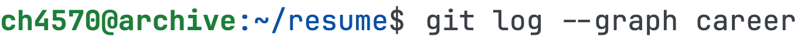

서민재Rex Seo
백엔드 엔지니어 · Java, Kotlin, Spring
AI를 팀의 개발 방식에 들여오고, 실패해도 이어서 가는 시스템을 만드는 백엔드 엔지니어입니다. 추천 피드, 포인트·광고 플랫폼, 사내 AI 개발 자동화를 맡고 있습니다.

경력
유한책임회사웍스피어사원 · AI 추천/검색 플랫폼팀
- 추천 피드
-
- 조회 경로 9개를 병렬로 돌리고 경로마다 500ms 타임아웃을 두어 늦은 경로만 빼고 응답하게 했습니다.
- 후보를 500건, 100건으로 좁혀 재정렬하고 20건을 응답하는 3단계 랭킹과 스코어링 정책을 설계했습니다.
- 포인트·광고 안정성
-
- Kafka 이벤트가 멈춘 단계를 6개 상태로 기록하고, 저장한 payload로 실패한 업무만 다시 실행하게 했습니다.
- 15분 넘게 멈춘 이벤트는 유형별로 Slack에 알리고, 60초 안의 중복 클릭은 포인트를 차감하지 않습니다.
- AI 자동화·공통 코드
-
- AI 코딩 도구가 팀 컨벤션을 따르도록 하네스와 n8n 코드리뷰 봇을 만들고, 하네스는 오픈소스 Vulpora로 공개했습니다.
- 코드 변경을 신청, 검증, 승인 순서로 처리하고 승인 뒤 캐시를 갱신하는 흐름과 쓰기 API 접근 제어를 작업했습니다.
- ElastiCache 패치로 Primary가 바뀌어도 쓰기가 막히지 않도록 Primary·reader endpoint 접속으로 바꾸는 작업을 했습니다.
토스랩Developer · Backend Team
- JPA 변경 감지 오류를 실제 영속성 컨텍스트에서 재현해 잘못 저장된 데이터 약 200만 건을 보정 스크립트로 바로잡았습니다.
- Live RDS CPU 99% 과점유를 분석해 평균 3%로 낮췄고, S3 미삭제 파일 60,325건(771.61 GB)을 삭제했습니다.
- Drive 서비스 테스트를 0개에서 300개+로 늘리고 Spring Boot를 2.3.8에서 3.3.3으로 올렸습니다.
오케스트로주식회사Member · Platform Service Dev 6
- Spring Cloud Gateway에 Spring Security·JWT 인증을 붙이고 SonarQube·Jenkins 연동 API를 개발했습니다.
주식회사즐거운커뮤니케이션즈팀원 · 개발2팀
기술
- 백엔드
- Java, Kotlin, Spring Boot, Spring Batch, Spring Data JPA, SQL
- 연동·보안
- Kafka, MSA, Spring Security, Spring Cloud Gateway, JWT
- 데이터
- Redis, OpenSearch, PostgreSQL, MySQL, MariaDB, Oracle, MSSQL
- 인프라·CI
- AWS, Grafana, JUnit 5, MockMvc, Jenkins
오픈소스·개인 프로젝트
- Spring 오픈소스 — Spring Kafka PR이 병합됐고 Spring Boot와 Spring Data JPA에는 제안이 반영됐습니다.
- OpenSearch 한글 검색 플러그인 — Java Cafe의 Elasticsearch 플러그인을 OpenSearch 2.19용 Kotlin으로 이식했습니다.
학력·자격·활동
- 학력·자격
- 한국방송통신대학교 컴퓨터과학과 졸업 (2023.03 – 2025.03) · SQLD (2022.06) · OPIc IM1
- 발표·활동
- YouthCon 2025 「우리팀을 위한 Spring Test 만들기」 · Velog · 글또 10기 준비위원, 연사
기술 이름을 입력하거나 '기술' 줄의 단어를 누르면 본문에서 같은 단어를 칠합니다.
인쇄용 PDF